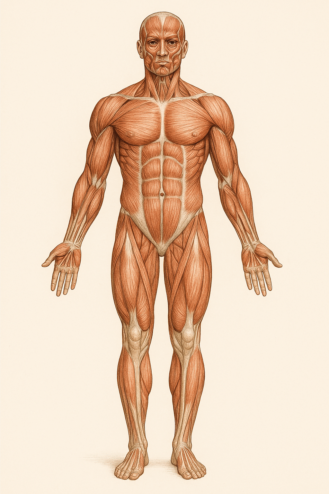

Escala Multidimensional de Prioridad de Atención en Centros para Pacientes con ELA (EMPA-CELA)
AVISO IMPORTANTE: Esta escala no ha sido validada clínicamente. No se asume responsabilidad de ningún tipo por su uso. Los resultados son meramente orientativos y no deben utilizarse como única herramienta para tomar decisiones clínicas. Consulte siempre con profesionales sanitarios cualificados.
Instrucciones: Evalúe cada dimensión seleccionando la opción que mejor describe la situación actual del paciente. Al finalizar, haga clic en "Calcular Prioridad".
Instrucciones: Haga clic en las áreas afectadas del paciente para registrar su evolución y síntomas asociados.

Evolución temporal de la enfermedad
Instrucciones: Evalúe los dispositivos de soporte vital respiratorio que utiliza el paciente y aquellos que podrían estar indicados en su caso.